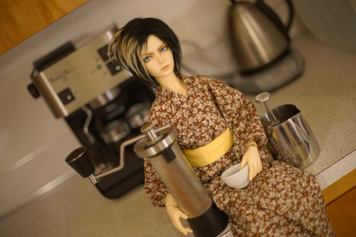
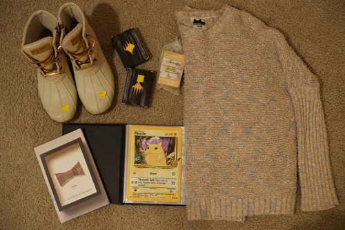

I cleaned out my spresso machine last night. My dear Cheby gets to be my obsessive hobby otaku doll every time. How many hobbies will I give him?
I kinda broke it though I think? If you turn the steam valve knob while steam isn't pressed, water runs out of the brew head as well. I don't remember it doing that before... It's such a mess of wires inside I feel overwhelmed looking at it.
I found out yesterday that Kame will take custom orders. Absolutely dangerous information. My dreams of having a Shizuku on a Kiki body are entirely possible. Unfortunately, losing the chance to buy a doll makes you want it even more. I am doing my best to stay strong though. I must hold out for a lovely 58chan.
Big news for avid doll questionnaire readers! Both Musume and Vega have filled out the 100 questions! I'm really happy with how it turned out. The questions that were chosen can get some really fun to read answers. I really like reading about people's hobby experiences.
They're pink and off white!! Rose gold??
Ryan wanted them this time? It's always fun to open cards
I'm pretty sure I've bought this soap before in Hawaii.
This will be the only book available in my doll cafe along with Klara and the Sun. Multiple copies available.
I didn't need it but now I have the pikachu that it came with
Ryan bought it for me. It's an inside joke...
Ryan needed these for his office
I've never wanted to yell at another customer more after he saw me find this and tell us FIVE TIMES we need to have it priced. Ryan did yell at him. f*** off, dude. I'm pretty sure this dude doesn't have a job and just picks all day instead because I see him every time I go.
Ryan didn't want my Ronald Reagan calendar above the sink. Edit: He's letting me keep my Ronnie calendar above the sink.
A 2010 book. Hangry and Angry are on the cover so it was fate! Has designer, street fashion, and just a little historical from what I can see.
I was eyeing this book last year and I finally just bought it. The author has a bit of an obsession with patchwork but she seems to know what she's doing. Time to find out I've been making doll kimono the hard way.
Also for Ryan's office